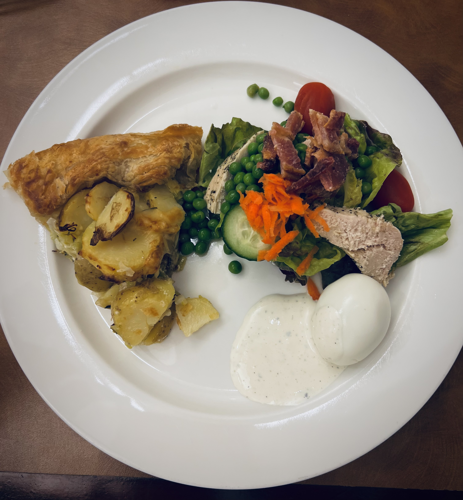

Potato and Leek Galette
One of the first family meals we made in Week 2. Built on pâte brisée, layered with Dijon, crème fraiche, sautéed leeks, and thinly sliced potatoes. Folded edges, egg-washed, baked until golden.

Yield: 8 servings
Ingredients
- 16 oz pâte brisée or galette dough
- ½ cup crème fraiche
- 2 tbsp Dijon mustard
- 2 tsp garlic, minced
- 2 tsp rosemary, minced
- 1 lb leeks, sliced into ⅛-inch half-moons
- 1 tbsp butter
- 1½ lbs Yukon gold potatoes
- ¼ cup olive oil
- ¼ cup heavy cream
- 1½ cups cheese (cheddar or gruyère, plus parmesan)
- Egg wash (1 whole egg + 1 tbsp water)
- Salt and pepper to taste
Directions
- Boil 1½ lbs Yukon gold potatoes, skins on, in salted water until fork tender. Cool, then slice ⅛ inch thick.
- Sauté 1 lb leeks in 1 tbsp butter until tender. Add 2 tsp minced garlic, season with salt and pepper.
- Preheat oven to 350°F.
- Roll 16 oz pâte brisée to ⅛-inch thickness (roughly a 16-inch circle). Transfer to a parchment-lined sheet pan.
- Spread 2 tbsp Dijon over the dough, then ½ cup crème fraiche, leaving a 3-inch border. Scatter the leek mixture and 2 tsp rosemary over the top, staying within the border.
- Layer the sliced potatoes over the leeks. Drizzle with ¼ cup olive oil and ¼ cup heavy cream, then top with 1½ cups cheese.
- Fold the uncovered dough edges in toward the filling in sections. Brush edges with egg wash, season with salt and pepper.
- Bake until the pastry is golden brown, 30–35 minutes.